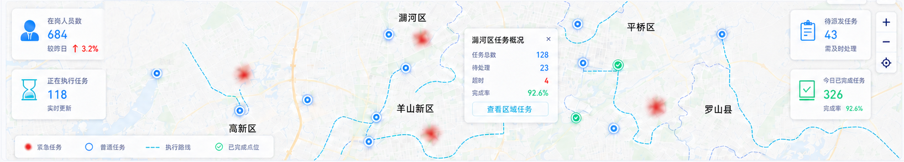

在岗人员数
684
较昨日 ↑ 3.2%

| 区域 | 任务总数 | 已完成任务 | 待处理任务 | 超时任务 | 完成率 | |
|---|---|---|---|---|---|---|
| 涧河区 | 128 | 118 | 23 | 4 | 92.6% | |
| 平桥区 | 102 | 94 | 15 | 2 | 92.2% | |
| 羊山新区 | 96 | 88 | 12 | 3 | 91.7% | |
| 高新区 | 88 | 79 | 11 | 2 | 89.8% | |
| 罗山县 | 76 | 68 | 10 | 1 | 89.5% |
| 任务编号 | 所属区域 | 任务状态 | 剩余时长 | 操作 |
|---|---|---|---|---|
| TASK-20260824-001 | 涧河区 | 待派发 | — |
|
| TASK-20260824-002 | 平桥区 | 执行中 | 01:32:45 |
|
| TASK-20260824-003 | 羊山新区 | 执行中 | 00:58:12 |
|
| TASK-20260824-004 | 高新区 | 已完成 | — |
|
| TASK-20260824-005 | 罗山县 | 已超时 | 00:15:32 |
|